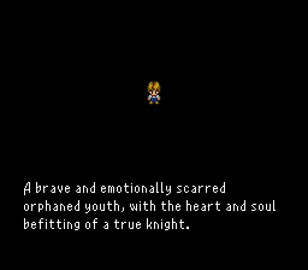
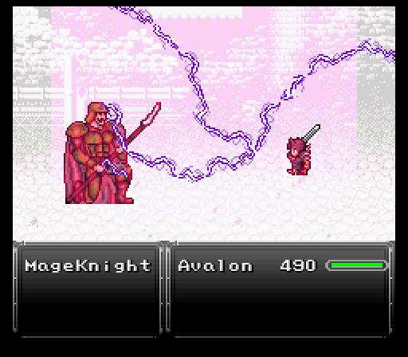
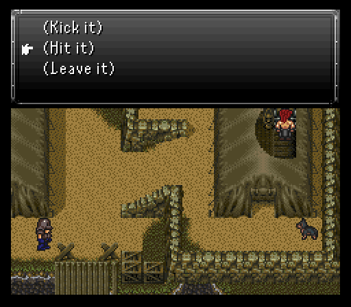
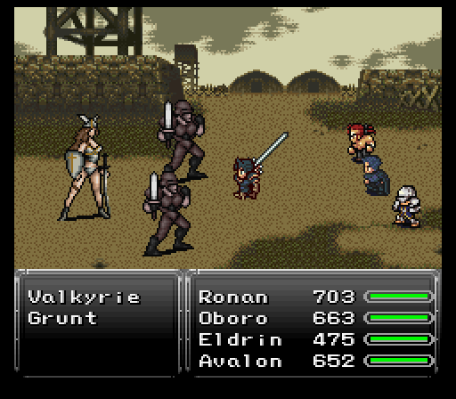

Part 7A: The Epic of Ronan I
Ronan's wildlife adventure

Once Ronan regains consciousness from his outer body experience, the first order of business is to check out the house to the northeast. It's an orphanage of sorts with all kinds of kids inside and a random Neko merchant with some interesting stuff on sale, namely Shurikens, Ninja Scrolls, and Mist Scrolls. Get a bunch of Shurikens and a few of the scrolls as they'll be useful for a character Ronan's going to meet soon. As well as some Ethers if you don't have many, for another character Ronan's going to meet soon. Neko also has for sale a very expensive relic called First Strike, which instantly fills the user's ATB gauge at the start of each battle. It won't however let you run away instantly like a preemptive strike. There's no dire need to get this, but if you have enough gil to spend it's certainly nice to have, especially for the aforementioned upcoming character. If not, you can always get it later. Remember to sell any Beast Hides and Scrap Metals you may have acquired for extra gil.
As for Ronan's equipment, you should have the Volt Knuckle and Spider Fangs from Cloud's scenario, which will work great against the upcoming mechanized and human enemies, a Fighter Hat and Ninja Gear, and for relics the Griffen Eye and the Speed Boots. These will help out a considerable amount since he's all by himself thus far. There's a lot of status-inducing enemies later on as well as one particular battle coming up soon that will make you happy to have it, as mentioned in the previous segment.
Since Ronan is very tanky there's never really any need to put a shield on him instead of having him dual wield. But when he has multiple elemental claws equiped, be attentive to which elemental claw is being used against which enemy, you may want to swap one out for a shield or opt to use a non-elemental one if they are immune to or absorbing one of his weapons' elemental damage. For instance later on during the train segment swapping out the Spider Fangs to the Titan Claw or Brass Knucks, since undead monsters eat poison like candy.

Of all the people here, the interesting one is the nun, Teresa. Talking to her reveals that one of the kids left on a journey, one who's past we get the choice to see in a flashback cutscene.
Long story short? Don't anger the kid, ESPECIALLY when someone murders his mom during a robbery attempt. This kid is known as Arc, someone I'm sure we'll be running into before this scenario is all over with.
Once you're done chatting with Teresa, the next goal is clear; Ronan needs to leave the orphanage and head east to an Imperial base. It'd be wise to save after every encounter so you don't die instantly on the way there. If you need to farm gil for items or what have you, you can sleep in the beds at the orphanage for full healing. And talk to all the children for some important story beats.
The monsters we can encounter around here are:
- Mindflayer - Uses Splash and Magic Dust which causes pig status.
- Paraslime - A step up in evolution from the regular Slime.
- Mugger - Rare encounter. Practically harmless, but can steal your gil and escape.
- Geemer - Has a special attack called Skewer that is 3x stronger than its normal attack power.
- Cockatrice - The same as from Mt. Zephyr. Always dangerous with their ability to petrify.
Imperial base

Ronan begins his foray into an Imperial base. Obviously he's screwed if caught so while he attempts to devise a plan, two enemy soldiers are basically forced to go into battle at a mysterious castle enshrouded in mist. This might have been a more thoughtful plan had one of the key figures of the place, a man known as Avalon, not been around and is ready to drive the Imperials away from the castle.

Avalon is the next major playable character and he brings some interesting tools to the table. He's got some basic magic spells to start out with like Cure, Purify (heals poison), Frenzy (inflicts berserk on the target), and Expel (damages the target's mp). He can also equip two weapons if he so chooses, including the Mystic Sword. Might be a bit of a risky prospect right now on this difficulty setting, but luckily Avalon has one more trick up his sleeve, his Havoc Sword command.
Havoc Sword (or Havoc for short) lets Avalon launch an attack at the enemy, doing damage equal to his current hp. He can opt to multi target it, but the damage gets divided equally amongst all enemies. Can also inflict a random status ailment.
When you gain control of Avalon you'll want to immediately equip him with relics. A Mithril Glove or Mystic Ring is always nice, plus a White Cape to increase his Magic Block. If you want to focus on doing maximum physical damage, equip the Mystic Sword and place him in the front row. If you plan to mainly use Havoc and play more defensively with his spells/healing, place him in the back row. If you do equip the Mystic Sword on him, or another sword, make sure to replace Sange for it, to help out with an upcoming battle.
Avalon gets to test his Havoc Sword skill against one of the Empire's Mage Knights. The Mage Knight can cast Spark for a bit over 110 damage or use physicals that do about the same, maybe a pinch higher if Blade Rush is used. He can also cast Cura on himself and uses an Elixir one time after his hp falls low.
For Avalon, I have him open with a Havoc Sword, then just resort to Cure spam in between rounds of normal strikes. Takes while, but it's not a super hard fight.
After the Mage Knight gets dispatched (and a much appreciated Speed Tab drops), the scene switches back to Ronan. I quickly exit the base, save up, then do a timeskip. Why? Because I'm an idiot that got caught by Imperial soldiers & roasted by an Imperial dog trying to kick open a chest.
Ronan's task is to simply not ram into that soldier outside the nearby tent as he sneaks through the place while looking for loot. Some of the boxes around the base contain Scrap Metal, good for 2k gil per piece obtained when sold at a store, so be sure to check them all.
Also at the start is a chest in the eastern tent whose top won't open. Choosing to hit it when the choices come up will let you open the chest to get an X-Potion.
Moving south starts a bunch of cutscenes. Some cyborg named Leo seems to be the one trying to get an upper hand at Mist Castle, but he gets called back to the Imperial city, leaving wacky clown man Kefka in charge to deal with business there.
The problem with that? Ronan tries to stop him, but not alone. There's been an assassin skulking around and both him and his dog show up now to lend Ronan a hand in kicking Kefka's behind.

This assassin is known as Oboro and he's the guy to go to when stealing business is required. For now, he just tosses Shurikens while Ronan chips in when possible until a cutscene starts. While there is nothing to steal off Kefka, remember for Oboro that you hold the X Button down instead of pressing it and it'll swap his Steal and Throw commands.
While this battle can in fact be won, there is no reward for doing so and you'll miss the cutscene, so you should play it like a survival battle until enough time passes and don't waste any unnecessary items trying to drop Kefka...unless you want the bragging rights of course.
After the fight be sure to heal back up and remove any negative status effects. Give Oboro another relic of your choosing, and a spare shield if you have one lying around. Keep in mind that when he leaves the party much later on in this scenario, he'll take whatever you gave him...but in this mod you'll be seeing a lot more of him so it's not a big deal to get anything you lent him back later, unlike real-life friends... The Thief Gloves he comes with are great for stealing obviously, but with tougher fights in mind I'll give him relics that make him hit harder and protect against statuses, like a Power Glove and Star Pendant, because he's already extremely fast and I don't want to throw Shurikens every turn.

Three more tents in the area to examine. The one Leo came out of has a message on the table inside. It's a warning regarding a certain Dreadwood Forest. Perhaps we'll visit there later?
The other tent? Couple of chests inside. One has 5200 gil, the other a surprise Telstar enemy inside. Likes to counter Ronan's combos with Bloodlust which inflicts berserk. Wouldn't be so bad if it didn't also summon Soldiers on to the field. Telstar needs to drop quickly or your just going to get overwhelmed by the Soldier lackeys. If Oboro has a Bolt Scroll or Ninja Star at his disposal now might be a good time to use it. You'll definitely want to steal the T'ai Chi Cap though since it's a nice helmet with a 12.5% increase to max hp, so keep the Thief Gloves on Oboro for this battle to make this task easier. If you spend too much time on this fight, Telstar will send down two Step Mines hitting Ronan and Oboro respectively, so you'll want to wrap things up before that happens.

After that's dealt with, you can jump behind the tent to the final tent. There's a chest with an extremely rare Quicksilver inside. It's an item than, when used, grants the user two consecutive turns.
After chasing Kefka for a bit, he sics a pair of Soldiers and a brand new pair of enemies, Defenders, on the duo. All physical attackers, but can get overwhelmed like with the Telstar. Luckily a Mist Scroll on Oboro and/or Ronan let's them clean house easily. In this mod, Oboro can use his scrolls on other characters.
More cutscenes ensue where somehow poisoning the water supply makes Mist Castle fall faster than you can say "goddamn!". Unfortunately that didn't kill Avalon and he basically flies into a furious rage, charging into the Imperial base with his sidekick Eldrin in tow. The first two battles are against generic soldiers, but the third features a mini boss of sorts, a Valkyrie. She mainly uses physical attacks with the occasional Drain or Air Blast which will remove the Clear status from a character if they had it. Just like the Telstar battle more and more soldiers will keep coming in after you remove them, so you should focus on taking out the Valkyrie promptly. She is immune to holy element, so Ronan's Aura Blast is off the table, as well as one of Avalon's sword Sange, which is why I mentioned replacing it earlier if possible. Use Meteor Smash instead for Ronan (L, R, down, up, A). She also has a Might Tab to steal if you are so inclined.
What follows is a series of Magitek Armor battles where you just mow down everything in a three mile radius, even as you make your escape from the Imperial base. In other words, use Thunder Beam on everything and leave the rest up to Oboro and his dog, Ace.

Considering ourselves both lucky and badass to have decimated an entire Imperial base, we now apprehensively decide to make our way to Dreadwood Forest.